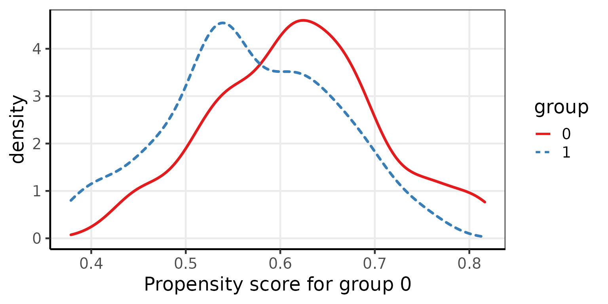

Incorporating propensity scores analysis in psborrow2
Isaac Gravestock
propensity_scores.Rmd
library(psborrow2)Propensity scores (PS) methods offer various ways to adjust analyses for differences in groups of patients.
Austin (2013) discusses various approaches for using PS with survival analyses to obtain effect measures similar to randomized controlled trials.
Wang et al. (2021) discuss using PS for IPTW, matching and stratification in combination with a Bayesian analysis. These methods allow for the separation of the design and analysis into two stages, which may be attractive in a regulatory setting.
Another approach is the direct inclusion of the PS as a covariate in the outcome model.
Propensity Score Calculation
Propensity scores are the probabilities that an observation belongs to one group or another, in this setting the internal or external patients. The PS models are fitted based on baseline covariates that could be confounders between outcome and being in the internal/external group.
The simplest approach for calculating PS is a logistic generalized
linear model. First, let’s load some demo data from
psborrow2.
my_data <- example_surv
head(my_data)
#> trt ext eventtime status censor cov1 cov2 cov3
#> 1 0 1 24.000000 0 1 0 7 13.551859
#> 2 1 0 24.000000 0 1 1 6 7.517466
#> 3 0 1 9.468386 1 0 0 7 4.884504
#> 4 0 0 8.841009 1 0 0 7 5.631334
#> 5 0 0 13.559467 1 0 1 12 8.312818
#> 6 1 0 24.000000 0 1 0 12 13.539768Let’s now fit a logistic generalized linear model and add the PS as an additional covariate.
ps_model <- glm(ext ~ cov1 + cov2 + cov3, data = my_data, family = binomial)
ps <- predict(ps_model, type = "response")
my_data$ps <- ps
head(my_data)
#> trt ext eventtime status censor cov1 cov2 cov3 ps
#> 1 0 1 24.000000 0 1 0 7 13.551859 0.4694384
#> 2 1 0 24.000000 0 1 1 6 7.517466 0.4005745
#> 3 0 1 9.468386 1 0 0 7 4.884504 0.4192069
#> 4 0 0 8.841009 1 0 0 7 5.631334 0.4234848
#> 5 0 0 13.559467 1 0 1 12 8.312818 0.5332824
#> 6 1 0 24.000000 0 1 0 12 13.539768 0.5765787The calculated PS can be included as a covariate in the analysis object, for the “covariate adjustment” PS approach:
data_mat <- create_data_matrix(
my_data,
covariates = c("cov1", "cov2", "cov3", "ps"),
ext_flag_col = "ext",
outcome = c("eventtime", "censor"),
trt_flag_col = "trt"
)
#> Call `add_covariates()` with `covariates = c("cov1", "cov2", "cov3", "ps") `
analysis_object <- create_analysis_obj(
data_matrix = data_mat,
covariates = add_covariates(c("cov1", "cov2", "cov3", "ps"),
priors = normal_prior(0, 100)
),
borrowing = borrowing_details("BDB",
ext_flag_col = "ext",
tau_prior = gamma_prior(0.1, 0.1)
),
treatment = treatment_details("trt", normal_prior(0, 100)),
outcome = weib_ph_surv_dist("eventtime", "censor",
shape_prior = exponential_prior(1),
baseline_prior = normal_prior(0, 1000)
)
)
#> Inputs look good.
#> Stan program compiled successfully!
#> Ready to go! Now call `mcmc_sample()`.Other PS Analyses
For more complex PS analyses, we can use one of the dedicated R packages.
PSweight
The PSweight package can calculate PS using other model fitting approaches than the simple glm described above. It also provides some summary statistics and plots. For example we can use a generalized boosted regression model (gbm):
library(PSweight)
my_data2 <- example_surv
psw_model <- SumStat(ext ~ cov1 + cov2 + cov3, data = my_data2, method = "gbm")
summary(psw_model)
#> unweighted result
#> Mean 0 Mean 1 SMD
#> cov1 0.514 0.500 0.028
#> cov2 5.804 6.607 0.297
#> cov3 5.663 6.692 0.240
#>
#> overlap result
#> Mean 0 Mean 1 SMD
#> cov1 0.499 0.500 0.000
#> cov2 6.295 6.344 0.018
#> cov3 6.228 6.348 0.028A plot of the distributions shows there is good overlap between the scores between both groups.
plot(psw_model, type = "density")
The PS values can be copied into the data set and the analysis object can be constructed as before.
my_data2$ps <- psw_model$propensity[, 2]This package can also trim the data.
psw_trimmed <- PStrim(ext ~ cov1 + cov2 + cov3, data = my_data2, delta = 0.1)
psw_trimmed
#> Summary of the trimming:
#> 0 1
#> trimmed 0 0
#> remained 358 242Since there is a reasonable overlap between the data, only 5 patients were trimmed.
As before this can be used for in the analysis by creating a suitable data matrix.
create_data_matrix(
psw_trimmed$data,
covariates = c("cov1", "cov2", "cov3", "ps"),
ext_flag_col = "ext",
outcome = c("eventtime", "censor"),
trt_flag_col = "trt"
)
#> Call `add_covariates()` with `covariates = c("cov1", "cov2", "cov3", "ps") `MatchIt
A variety of matching methods, including PS matching are implemented in the MatchIt package.
As described in the Getting Started vignette, it can be useful to check the imbalance before matching.
library(MatchIt)
# No matching; constructing a pre-match matchit object
no_match <- matchit(trt ~ cov1 + cov2 + cov3,
data = example_surv,
method = NULL, distance = "glm"
)
summary(no_match)
#>
#> Call:
#> matchit(formula = trt ~ cov1 + cov2 + cov3, data = example_surv,
#> method = NULL, distance = "glm")
#>
#> Summary of Balance for All Data:
#> Means Treated Means Control Std. Mean Diff. Var. Ratio eCDF Mean
#> distance 0.4246 0.2877 0.8238 1.0491 0.2234
#> cov1 0.5350 0.4950 0.0802 . 0.0400
#> cov2 4.7400 6.8225 -0.9420 0.6640 0.1302
#> cov3 4.5484 6.8425 -0.6058 0.7777 0.1557
#> eCDF Max
#> distance 0.3350
#> cov1 0.0400
#> cov2 0.3100
#> cov3 0.2525
#>
#>
#> Sample Sizes:
#> Control Treated
#> All 400 200
#> Matched 400 200
#> Unmatched 0 0
#> Discarded 0 0Here we are matching treated to untreated to select the most comparable control group, regardless of whether they are internal or external.
Now we can try a 1:1 nearest matching approach.
match_11 <- matchit(trt ~ cov1 + cov2 + cov3,
data = example_surv,
method = "nearest", distance = "glm"
)
summary(match_11)
#>
#> Call:
#> matchit(formula = trt ~ cov1 + cov2 + cov3, data = example_surv,
#> method = "nearest", distance = "glm")
#>
#> Summary of Balance for All Data:
#> Means Treated Means Control Std. Mean Diff. Var. Ratio eCDF Mean
#> distance 0.4246 0.2877 0.8238 1.0491 0.2234
#> cov1 0.5350 0.4950 0.0802 . 0.0400
#> cov2 4.7400 6.8225 -0.9420 0.6640 0.1302
#> cov3 4.5484 6.8425 -0.6058 0.7777 0.1557
#> eCDF Max
#> distance 0.3350
#> cov1 0.0400
#> cov2 0.3100
#> cov3 0.2525
#>
#>
#> Summary of Balance for Matched Data:
#> Means Treated Means Control Std. Mean Diff. Var. Ratio eCDF Mean
#> distance 0.4246 0.3979 0.1607 1.3369 0.0313
#> cov1 0.5350 0.5400 -0.0100 . 0.0050
#> cov2 4.7400 5.0450 -0.1380 1.2490 0.0203
#> cov3 4.5484 5.1457 -0.1577 0.8926 0.0444
#> eCDF Max Std. Pair Dist.
#> distance 0.125 0.1621
#> cov1 0.005 1.0325
#> cov2 0.100 0.2013
#> cov3 0.090 0.8468
#>
#> Sample Sizes:
#> Control Treated
#> All 400 200
#> Matched 200 200
#> Unmatched 200 0
#> Discarded 0 0
plot(match_11, type = "jitter", interactive = FALSE)

Determining whether the balance after matching is appropriate is beyond the scope of this vignette. You can read more in the MatchIt Assessing Balance vignette. Another useful package is cobalt, which provides tools for assessing balance between groups after weighting or matching. It is compatible with many matching and weighting packaes. See the vignette for more details.
However, if you are happy with the results of the matching procedure, you can extract the data for use in psborrow2.
create_data_matrix(
data = example_surv[match_11$weights == 1, ],
covariates = c("cov1", "cov2", "cov3"),
ext_flag_col = "ext",
outcome = c("eventtime", "censor"),
trt_flag_col = "trt"
)
#> Call `add_covariates()` with `covariates = c("cov1", "cov2", "cov3") `